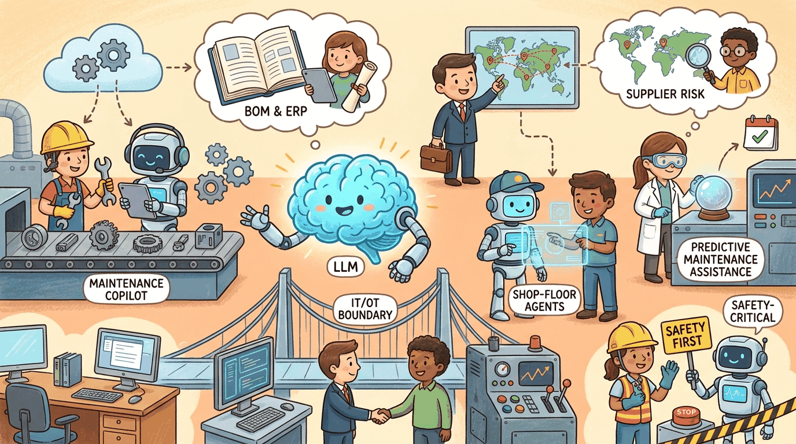

a Kurzgesagt-meets-XKCD visual metaphor with friendly characters and clear iconography, capturing the theme: Maintenance copilots, BOM and ERP integration, supplier risk, shop-floor agents, predic...Manufacturing was slower than other industries to adopt LLMs, for good reasons: the cost of a hallucinated answer that causes a line shutdown, a defective part, or a safety incident is measured in lost production runs, not customer-support tickets. The 2025-2026 wave of successful deployments concentrates in the assistive layer: helping technicians find the right manual page faster, summarizing inspection reports, drafting work-order text, advising procurement on supplier risk. The LLM rarely touches the OT (operational technology) layer directly; it sits on the IT side and informs human decisions. That conservative architecture is not a limitation; it's the design that lets the technology ship at all.
57.1 Use Cases That Actually Work
Maintenance Copilots Over Equipment Manuals
The most common starting point: RAG over the OEM manuals, internal SOPs, historical work orders, and tribal-knowledge wikis. A technician facing an unfamiliar fault asks the copilot in natural language; the copilot returns the relevant manual section, similar past tickets, and the diagnostic checklist. Major manufacturers (Siemens, Bosch, GE Vernova, Caterpillar, John Deere) have shipped variants of this. Reported productivity gains: 15-30% reduction in mean-time-to-repair on covered equipment classes.
Inspection Report Summarization and Trend Detection
Visual inspection reports and quality-control narratives accumulate in unstructured form. LLMs extract structured fields (defect type, severity, location, root-cause hypothesis), aggregate across batches, and surface trends a human inspector might miss across thousands of reports. Pairs naturally with classical anomaly-detection over the structured outputs.
Work-Order and Operational-Document Drafting
Drafting work orders, change-management documents, deviation reports, and pre-shift briefs from structured inputs. The LLM produces the prose; humans review and sign. Particularly valuable in regulated industries (pharma manufacturing, aerospace, automotive) where documentation quality is itself a compliance obligation.
Supplier Risk and Procurement Intelligence
RAG over supplier filings, news feeds, sanctions lists, and contract terms. The LLM produces a risk briefing: financial-distress signals, geopolitical exposure, single-source concentration, recent disruptions. Procurement teams report these briefings cut research time from days to hours per supplier review.
ERP and MES Query Translation
Natural-language interfaces to SAP, Oracle, Infor, and major MES systems. "How many units of part X were scrapped on line 3 last week, and why?" gets translated to the appropriate query against the underlying systems. The pattern: text-to-SQL or text-to-API with strict schema grounding, plus a human verification step before any write operation.
Predictive-Maintenance Triage
The classical ML models (anomaly detection on vibration, temperature, current draw) remain the workhorses. LLMs add value at the triage layer: when an alert fires, the LLM summarizes the recent sensor history, the equipment's maintenance log, and similar past events into a briefing for the on-call technician. The LLM does not predict the failure; it explains what the predictor saw and what historically followed.
A consumer-goods manufacturer runs vibration- and temperature-based anomaly detectors on roughly 1,800 motors across four plants. When an anomaly fires, a small (8B-13B parameter) open-weight LLM, deployed on plant infrastructure, receives a structured payload: the last 24 hours of sensor history, the asset's full maintenance log from the CMMS, the OEM manual section that covers the failure mode the classical model flagged, and the three most similar past tickets resolved in the last two years. The LLM produces a 200-word briefing: what the predictor saw, the most likely failure mode based on history, the recommended diagnostic steps, the parts to pre-stage, and the realistic time-to-repair window. The triage memo posts to the maintenance-planning queue with a citation to every source it used. The on-call technician arrives with the right parts roughly 35% more often than before, and mean-time-to-repair drops measurably for the covered asset classes. On the procurement side, the same model is used for supply-chain-disruption analysis: when a Tier-2 supplier appears in adverse news (sanctions, factory fire, port closure), the LLM produces a risk brief that names the affected SKUs, the alternates qualified in the past 12 months, the current lead-time differential, and the contractual exit clauses. The brief is a recommendation, not an action; procurement leadership signs the contracts. After several Fortune-500 pilots of fully-autonomous procurement-routing agents made commercially-bad calls during 2023-2024 geopolitical volatility, this advisor-with-human-on-the-contract architecture became the industry norm.
The ISA/IEC 62443 family of standards defines industrial-cybersecurity zones (areas of equal trust) and the conduits (controlled connections) between them. The reference pattern for manufacturing LLMs respects these boundaries absolutely: the LLM lives in the enterprise IT zone (Purdue Level 4-5), the MES and historian live in the operations zone (Level 3), and the PLC/DCS/SCADA networks live in the cell/area zone (Levels 0-2). Data flows up from OT to IT through one-way data diodes or audited gateways (historian replication, structured event feeds, signed work-order acknowledgements). The LLM never originates a write that crosses zones; if a maintenance-copilot recommendation needs to update a PLC parameter, the recommendation flows back as a paper or signed digital work order to a human technician, who applies it through the engineering workstation under the standard change-management process. The IT-side LLM may sit behind enterprise-grade firewalls and DLP; the OT-side never assumes a model is on the other end of a connection. This pattern is also explicitly aligned with NIST SP 800-82 Rev. 3 guidance on OT security and is now standard language in ISA-95 / ISA-99 architecture reviews.
Shop-Floor Voice Interfaces
Hands-free voice queries while a technician is gloved, holding a tool, or under PPE. Whisper-class speech recognition plus an LLM grounded in the equipment-specific corpus. Headset and ruggedized-tablet form factors matter as much as the model.
57.2 Failure Modes Specific to Manufacturing
Operational Technology (PLCs, SCADA, MES control loops) operates under safety-critical constraints, deterministic timing, and certification regimes that have nothing in common with cloud SaaS development. An LLM that writes directly to a PLC is, almost always, a catastrophic design. The reference architecture: LLMs live on the IT side; OT systems consume structured, signed, human-approved instructions through audited interfaces. The Stuxnet lesson applies twice over.
A maintenance copilot that confidently invents a fastener torque value or skips a safety step can cause real injuries. Defense in depth: (1) refuse to answer when the retrieval corpus doesn't contain the spec, (2) always cite the source page and revision number, (3) escalate any safety-related answer to a "verify with the printed manual" prompt before the technician acts. Several pilot programs have caught hallucinated specifications in evaluation that would have made it to the floor without these guards.
Many manufacturing environments cannot accept cloud-only LLM services. Reasons range from defense-industrial-base contractual constraints (ITAR, CMMC) to pragmatic concerns (factory-floor uptime cannot depend on internet connectivity). Successful deployments use on-premises or air-gapped model serving (vLLM, TGI, NVIDIA NIM, or appliance vendors). Open-weight models in the 7B-70B range are typically chosen for these footprints.
Manufacturing sites are often global, with local-language documentation, locally-customized SOPs, and locally-cached knowledge. A single global LLM deployment quickly fragments into dozens of site-specific configurations. Production patterns: a shared base model with per-site retrieval corpora, per-site evaluation sets, and per-site feedback loops. Centralizing the model without centralizing the corpus is a recipe for chronic frustration at the sites whose context is missing.
If the LLM informs decisions in a regulated process (ISO 26262 in automotive, IEC 61508 in process industries, IEC 62304 in medical-device manufacturing, GxP in pharma), the deployment becomes part of the safety case. This is rarely impossible but is always slower and more expensive than greenfield deployment. The pattern that works: scope the LLM out of any function with a safety-integrity level, and document that scoping explicitly.
57.3 Regulatory and Standards Framework
- ISO/IEC 42001: AI management system standard. Increasingly referenced in manufacturing procurement contracts.
- ISA/IEC 62443: industrial cybersecurity standards. LLM deployments touching OT networks must align with the relevant security levels.
- NIST AI Risk Management Framework: not legally binding but widely adopted as the reference for risk-management practice; many U.S. defense-industrial-base contracts now require AI RMF alignment. NIST SP 800-82 Rev. 3 remains the U.S. federal reference for OT cybersecurity that any cross-zone deployment is benchmarked against.
- EU Machinery Regulation (2023/1230): replaces the Machinery Directive; introduces AI-specific safety requirements for machinery placed on the EU market.
- EU AI Act: Annex III Section 4 (employment and worker management) catches some manufacturing HR use cases. Annex I lists product-safety legislation under which AI components inherit high-risk status.
- ITAR, EAR, and export controls: defense-related manufacturing data may be export-controlled. Model weights, training data, and inference traffic all need to be reviewed for export-control exposure.
- Sector-specific GxP/GMP regimes: pharmaceutical manufacturing under FDA, EMA, PMDA; medical-device manufacturing under MDR/IVDR; food under HACCP. Each has its own validation expectations for software (including LLMs) that touches production records.
57.4 Architectural Pattern: Plant-Floor Maintenance Copilot
The dominant pattern in successful manufacturing LLM deployments:
- On-premises or VPC-isolated model serving: open-weight models (Llama 3, Qwen, Mistral) on plant or regional infrastructure. Latency budget under 2 seconds for shop-floor UX.
- RAG over a curated equipment corpus: OEM manuals, internal SOPs, historical work orders, training materials. Versioned per equipment model and per site.
- Always-cite-source UI: every answer links to the manual page or work-order ID it came from. Technicians verify before acting on anything safety-related.
- Refusal outside corpus: when the retrieval returns nothing relevant, the system says "I don't have information on this; please consult X or escalate to Y" rather than improvising.
- Structured-output handoff to MES/CMMS: any action the LLM proposes (open work order, log inspection, update spare-parts count) goes through a structured, signed, human-approved write to the system of record. No free-text writes to OT.
- Per-site retrieval, shared model: one model, N sites, N retrieval corpora. Sites own their content; central team owns the model and the platform.
- Continuous evaluation against an equipment-specific eval set: representative technician questions with ground-truth answers from senior engineers. Regressions block deployments.
- Voice + text + image input: hands-free voice for the floor, text for the office, photo-based fault diagnosis where vision models earn their keep.
Table 57.4.1 summarizes the OT-safe LLM patterns that have emerged across the major industrial-software vendors.
| Pattern | LLM zone | OT interaction | Typical use cases | Risk-tier |
|---|---|---|---|---|
| Read-only maintenance copilot | IT (Purdue Level 4-5) | Reads CMMS, OEM manuals, historian extracts; writes nothing to OT | Equipment Q&A, fault-diagnostic checklists, hands-free voice queries | Low |
| Predictive-maintenance triage advisor | IT (Level 4) | Reads sensor history and asset logs; outputs work-order recommendation | Anomaly-triage briefings for the on-call technician | Low-Medium |
| Work-order drafting with structured handoff | IT (Level 4) | Drafts work-order text; human approves and dispatches via CMMS | Pharma deviation reports, aerospace nonconformance, automotive change orders | Medium (GxP/IEC 61508 documentation is regulated) |
| Supply-chain disruption advisor | IT (Level 5, enterprise) | Reads news/sanctions/ERP; outputs risk brief for procurement leadership | Supplier-risk briefings, geopolitical-disruption response | Medium (commercial impact only; no OT exposure) |
| Air-gapped plant assistant | Plant IT, isolated from corporate network | Local models only; no telemetry egress; offline corpus updates | Defense-industrial-base, classified manufacturing, regulated pharma | Low (technically) / High (oversight) |
| Direct PLC/SCADA write | Not recommended in 2026 | LLM writes setpoints, recipes, or safety logic | Catastrophic-design pattern; effectively no public deployments at scale | Out of scope |
57.5 Postmortems Worth Reading
- The 2024 plant-floor copilot that hallucinated torque specs: a major automotive supplier piloted a maintenance copilot without source citations. Technicians caught two fabricated fastener torque specifications in evaluation; the project was paused and re-architected with mandatory citation and refusal-when-uncertain. Public after-action notes are sparse but the lesson is widely shared in industry.
- Supply-chain-disruption "agent" pilots in 2023-2024: several Fortune 500 manufacturers tried fully-autonomous procurement-rerouting agents. All paused after the agents made commercially-bad calls during volatile geopolitical events that humans would have recognized as anomalous. The successful redesigns put the LLM in the briefing-and-recommendation seat with humans on the contracts.
- Pre-LLM but instructive: Boeing 737 MAX MCAS: automated systems that overrode pilot judgment in safety-critical functions. Not an LLM case, but the institutional lessons (rigorous safety case, no single point of override, explicit handoff to humans) apply directly to LLM use in safety-critical manufacturing.
57.6 Where to Read More
- Section 32.8 (Robotics, Embodied AI & Scientific Discovery), the closest in-book chapter to manufacturing-floor automation.
- Section 38.1 (Agent Safety & Prompt Injection Defense), relevant to any tool-using agent connected to operational systems.
- Section 37.5 (LLM Risk Governance & Audit).
- Section 46.2 (Enterprise Integration Patterns), the ERP/MES handoff patterns.
- FM.12 (production-patterns playbook (now part of Chapter 35 LLMOps coverage)), the source-quality-gate, sandboxed-execution, and one-command-rollback patterns are manufacturing essentials.
Bibliography
Sections
- 57.1 Manufacturing Use Cases That Actually Work Seven categories of manufacturing LLM work have demonstrated reliable production deployment by mid-2026: maintenance copilots, inspection-report summarization, work-order drafting, supplier risk intelligence, ERP/MES natural-language...
- 57.2 Failure Modes Specific to Manufacturing Five failure modes are uniquely costly in manufacturing: violations of the IT/OT boundary, hallucinated specifications and procedural steps, mismatched air-gap and on-premises requirements, multilingual and multi-site drift, and...
- 57.3 Manufacturing Regulatory and Standards Framework Seven frameworks shape manufacturing LLM deployments in 2026: ISO/IEC 42001 (AI management systems), ISA/IEC 62443 (industrial cybersecurity), NIST AI RMF and SP 800-82 (federal OT security and AI risk), EU Machinery Regulation...
- 57.4 Plant-Floor Maintenance Copilot Architecture Eight architectural choices define the dominant 2026 plant-floor maintenance copilot: on-premises or VPC-isolated serving, a curated and versioned equipment corpus, mandatory source citation, refusal outside the corpus,...
- 57.5 Postmortems and Named-Vendor Cases Four named-vendor cases anchor the 2025-2026 manufacturing LLM story, and three industry-wide postmortems explain why the architecture in Section 57.4 looks the way it does.